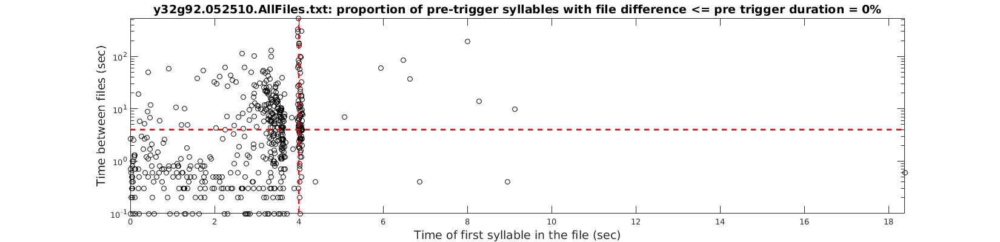
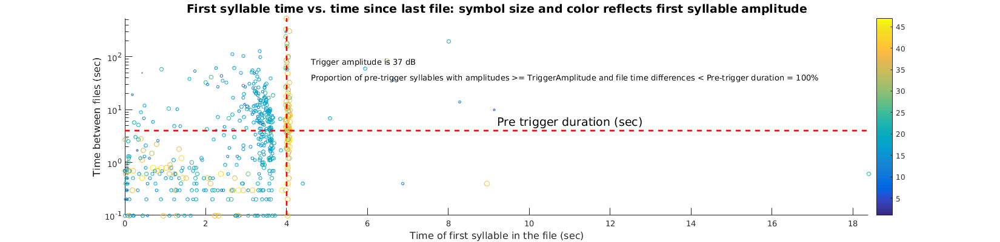

function [] = CheckTimeDifferenceBetweenFiles(DataDir, FileList, FileType)
Fid = fopen(FileList, 'r');
Files = textscan(Fid, '%s', 'DeLimiter', '\n');
Files = Files{1};
fclose(Fid);
Index = 1;
NegativeTimeDifferences = [];
for i = 1:length(Files)-1,
[PathStr, FileName, Ext] = fileparts(Files{i});
if (exist(fullfile(DataDir, 'ASSLNoteFiles', [Files{i}, '.not.mat']), 'file'))
load(fullfile(DataDir, 'ASSLNoteFiles', [Files{i}, '.not.mat']));
ValidLabels = find(labels ~= '0');
if (~isempty(ValidLabels))
CurrentFileTime = str2double(FileName(end-5:end-4))*3600*1000 + str2double(FileName(end-3:end-2))*60*1000 + str2double(FileName(end-1:end))*1000;
[PathStr, NextFileName, Ext] = fileparts(Files{i+1});
NextFileTime = str2double(NextFileName(end-5:end-4))*3600*1000 + str2double(NextFileName(end-3:end-2))*60*1000 + str2double(NextFileName(end-1:end))*1000;
[RawData, Fs] = GetData(DataDir, Files{i}, FileType, 0);
[LogAmplitude] = ASSLCalculateLogAmplitudeAronovFee(RawData, Fs, [], 5, []);
FirstSyllAmplitude = mean(LogAmplitude(round(onsets(ValidLabels(1))*Fs/1000):round(offsets(ValidLabels(1))*Fs/1000)));
CurrentFileDur = 1000*length(RawData)/Fs;
TimeDiff = NextFileTime - CurrentFileTime - CurrentFileDur;
if (TimeDiff < 0)
NegativeTimeDifferences(end+1) = TimeDiff;
disp(['Negative time difference of ', num2str(TimeDiff/1000), ' sec between file ', FileName, ' of duration ', num2str(CurrentFileDur), ' sec and file ', NextFileName]);
TimeDiff = abs(TimeDiff);
end
FileTimeDifferences(Index,:) = [onsets(ValidLabels(1)) TimeDiff FirstSyllAmplitude];
Index = Index + 1;
end
end
end
disp(['Proportion of negative time differences = ', num2str(100 * length(NegativeTimeDifferences)/size(FileTimeDifferences,1)), '%']);
disp(['Proportion of negative time differences <= -1 sec = ', num2str(100 * length(find(NegativeTimeDifferences <= -1000))/length(NegativeTimeDifferences)), '%']);
figure;
plot(FileTimeDifferences(:,1)/1000, FileTimeDifferences(:,2)/1000, 'ko');
hold on;
set(gcf, 'PaperPositionMode', 'auto');
set(gcf, 'Color', 'w');
set(gcf, 'Position', [198 558 1650 400]);
set(gca, 'YScale', 'log');
xlabel('Time of first syllable in the file (sec)', 'FontSize', 14);
ylabel('Time between files (sec)', 'FontSize', 14);
axis tight;
Temp = axis;
Temp(1) = 0;
axis(Temp);
PreTriggerDuration = inputdlg('Enter the pre-trigger duration in sec', 'Pre Trigger duration');
PreTriggerDuration = str2double(PreTriggerDuration{1});
plot(PreTriggerDuration * ones(1,2), Temp(3:4), 'r--', 'LineWidth', 2);
plot(Temp(1:2), PreTriggerDuration * ones(1,2), 'r--', 'LineWidth', 2);
NumSyllsWithOnsetDuringPreTrigger = find(FileTimeDifferences(:,1) <= PreTriggerDuration);
title([FileList, ': proportion of pre-trigger syllables with file difference <= pre trigger duration = ', num2str(100 * length(find(FileTimeDifferences(NumSyllsWithOnsetDuringPreTrigger,2) <= PreTriggerDuration))/length(NumSyllsWithOnsetDuringPreTrigger)), '%'], 'FontSize', 14);
saveas(gcf, fullfile('/home/raghav/LabNoteBookPlots', [FileList, '.FirstSyllTime.vs.FileTimeDifference.png']), 'png');
figure;
set(gcf, 'PaperPositionMode', 'auto');
scatter(FileTimeDifferences(:,1)/1000, FileTimeDifferences(:,2)/1000, ceil((FileTimeDifferences(:,3) + 1.001*abs(min(FileTimeDifferences(:,3))))*2), ceil((FileTimeDifferences(:,3) + 1.001*abs(min(FileTimeDifferences(:,3))))*2))
hold on;
set(gcf, 'Color', 'w');
set(gcf, 'Position', [198 558 1650 400]);
set(gca, 'YScale', 'log');
xlabel('Time of first syllable in the file (sec)', 'FontSize', 12);
ylabel('Time between files (sec)', 'FontSize', 12);
axis tight;
Temp = axis;
Temp(1) = 0;
axis(Temp);
colorbar;
plot(PreTriggerDuration * ones(1,2), Temp(3:4), 'r--', 'LineWidth', 2);
plot(Temp(1:2), PreTriggerDuration * ones(1,2), 'r--', 'LineWidth', 2);
title('First syllable time vs. time since last file: symbol size and color reflects first syllable amplitude', 'FontSize', 14);
text(mean(Temp(1:2)), 1.5*PreTriggerDuration, 'Pre trigger duration (sec)', 'FontSize', 14);
TriggerWindow = [(PreTriggerDuration - 0.05) (PreTriggerDuration + 0.1)];
TriggerSyllables = find((FileTimeDifferences(:,1)/1000 >= TriggerWindow(1)) & (FileTimeDifferences(:,1)/1000 <= TriggerWindow(2)));
TriggerAmplitude = median(FileTimeDifferences(TriggerSyllables,3));
ScaledTriggerAmplitude = ceil((TriggerAmplitude + + 1.001*abs(min(FileTimeDifferences(:,3))))*2);
text(Temp(1) + 0.25*diff(Temp(1:2)), Temp(3) + 0.75*diff(Temp(3:4))/5, ['Trigger amplitude is ', num2str(ScaledTriggerAmplitude), ' dB'], 'FontSize', 10);
PreTriggerSyllables_GreaterThanTriggerAmplitude = find((FileTimeDifferences(:,1)/1000 <= TriggerWindow(1)) & (FileTimeDifferences(:,3) >= TriggerAmplitude));
text(Temp(1) + 0.25*diff(Temp(1:2)), Temp(3) + 0.75*diff(Temp(3:4))/10, ['Proportion of pre-trigger syllables with amplitudes >= TriggerAmplitude and file time differences < Pre-trigger duration = ', num2str(100 * length(find(FileTimeDifferences(PreTriggerSyllables_GreaterThanTriggerAmplitude,2)/1000 <= PreTriggerDuration))/length(PreTriggerSyllables_GreaterThanTriggerAmplitude)), '%'], 'FontSize', 10);
saveas(gcf, fullfile('/home/raghav/LabNoteBookPlots', [FileList, '.FirstSyllTime.vs.FileTimeDifference.SyllAmplitudeBasedColorSize.png']), 'png');
disp('Finished');
Negative time difference of -0.3 sec between file y32g92_052510102518 of duration 13300 sec and file y32g92_052510102531
Negative time difference of -0.1 sec between file y32g92_052510104121 of duration 9100 sec and file y32g92_052510104130
Negative time difference of -0.1 sec between file y32g92_052510104248 of duration 20100 sec and file y32g92_052510104308
Negative time difference of -0.6 sec between file y32g92_052510105727 of duration 11600 sec and file y32g92_052510105738
Negative time difference of -0.2 sec between file y32g92_052510105738 of duration 8200 sec and file y32g92_052510105746
Negative time difference of -0.1 sec between file y32g92_052510105919 of duration 12100 sec and file y32g92_052510105931
Negative time difference of -0.1 sec between file y32g92_052510110422 of duration 11100 sec and file y32g92_052510110433
Negative time difference of -0.5 sec between file y32g92_052510110450 of duration 12500 sec and file y32g92_052510110502
Negative time difference of -0.4 sec between file y32g92_052510110531 of duration 10400 sec and file y32g92_052510110541
Negative time difference of -0.3 sec between file y32g92_052510110856 of duration 9300 sec and file y32g92_052510110905
Negative time difference of -0.1 sec between file y32g92_052510110946 of duration 11100 sec and file y32g92_052510110957
Negative time difference of -0.5 sec between file y32g92_052510111154 of duration 11500 sec and file y32g92_052510111205
Negative time difference of -0.2 sec between file y32g92_052510111638 of duration 12200 sec and file y32g92_052510111650
Negative time difference of -0.3 sec between file y32g92_052510111745 of duration 11300 sec and file y32g92_052510111756
Negative time difference of -0.1 sec between file y32g92_052510111826 of duration 11100 sec and file y32g92_052510111837
Negative time difference of -0.3 sec between file y32g92_052510112129 of duration 18300 sec and file y32g92_052510112147
Negative time difference of -0.3 sec between file y32g92_052510112850 of duration 22300 sec and file y32g92_052510112912
Negative time difference of -0.4 sec between file y32g92_052510113118 of duration 9400 sec and file y32g92_052510113127
Negative time difference of -0.7 sec between file y32g92_052510113140 of duration 9700 sec and file y32g92_052510113149
Negative time difference of -0.1 sec between file y32g92_052510113324 of duration 15100 sec and file y32g92_052510113339
Negative time difference of -0.5 sec between file y32g92_052510113543 of duration 9500 sec and file y32g92_052510113552
Negative time difference of -0.3 sec between file y32g92_052510113552 of duration 11300 sec and file y32g92_052510113603
Negative time difference of -0.6 sec between file y32g92_052510114158 of duration 9600 sec and file y32g92_052510114207
Negative time difference of -0.3 sec between file y32g92_052510114340 of duration 9300 sec and file y32g92_052510114349
Negative time difference of -0.2 sec between file y32g92_052510122601 of duration 8200 sec and file y32g92_052510122609
Negative time difference of -0.3 sec between file y32g92_052510122651 of duration 10300 sec and file y32g92_052510122701
Negative time difference of -0.4 sec between file y32g92_052510122915 of duration 27400 sec and file y32g92_052510122942
Negative time difference of -0.4 sec between file y32g92_052510123037 of duration 27400 sec and file y32g92_052510123104
Negative time difference of -0.4 sec between file y32g92_052510123132 of duration 27400 sec and file y32g92_052510123159
Negative time difference of -0.4 sec between file y32g92_052510123227 of duration 27400 sec and file y32g92_052510123254
Negative time difference of -0.4 sec between file y32g92_052510123254 of duration 27400 sec and file y32g92_052510123321
Negative time difference of -0.8 sec between file y32g92_052510124142 of duration 10800 sec and file y32g92_052510124152
Negative time difference of -0.6 sec between file y32g92_052510124354 of duration 13600 sec and file y32g92_052510124407
Negative time difference of -0.2 sec between file y32g92_052510124505 of duration 13200 sec and file y32g92_052510124518
Negative time difference of -0.5 sec between file y32g92_052510124518 of duration 8500 sec and file y32g92_052510124526
Negative time difference of -0.2 sec between file y32g92_052510124630 of duration 9200 sec and file y32g92_052510124639
Negative time difference of -1.1 sec between file y32g92_052510124801 of duration 8100 sec and file y32g92_052510124808
Negative time difference of -0.1 sec between file y32g92_052510124822 of duration 14100 sec and file y32g92_052510124836
Negative time difference of -0.5 sec between file y32g92_052510125032 of duration 18500 sec and file y32g92_052510125050
Negative time difference of -0.1 sec between file y32g92_052510125132 of duration 13100 sec and file y32g92_052510125145
Negative time difference of -0.5 sec between file y32g92_052510125215 of duration 11500 sec and file y32g92_052510125226
Negative time difference of -0.3 sec between file y32g92_052510125324 of duration 9300 sec and file y32g92_052510125333
Negative time difference of -0.6 sec between file y32g92_052510125358 of duration 8600 sec and file y32g92_052510125406
Negative time difference of -0.2 sec between file y32g92_052510125406 of duration 9200 sec and file y32g92_052510125415
Negative time difference of -0.3 sec between file y32g92_052510125500 of duration 11300 sec and file y32g92_052510125511
Negative time difference of -0.5 sec between file y32g92_052510125511 of duration 8500 sec and file y32g92_052510125519
Negative time difference of -0.1 sec between file y32g92_052510125944 of duration 8100 sec and file y32g92_052510125952
Negative time difference of -0.1 sec between file y32g92_052510130251 of duration 12100 sec and file y32g92_052510130303
Negative time difference of -0.3 sec between file y32g92_052510130406 of duration 9300 sec and file y32g92_052510130415
Negative time difference of -0.3 sec between file y32g92_052510130449 of duration 15300 sec and file y32g92_052510130504
Negative time difference of -0.1 sec between file y32g92_052510130804 of duration 21100 sec and file y32g92_052510130825
Negative time difference of -0.6 sec between file y32g92_052510131455 of duration 18600 sec and file y32g92_052510131513
Negative time difference of -0.5 sec between file y32g92_052510131557 of duration 11500 sec and file y32g92_052510131608
Negative time difference of -0.1 sec between file y32g92_052510131754 of duration 9100 sec and file y32g92_052510131803
Negative time difference of -0.7 sec between file y32g92_052510132315 of duration 8700 sec and file y32g92_052510132323
Negative time difference of -0.1 sec between file y32g92_052510132323 of duration 8100 sec and file y32g92_052510132331
Negative time difference of -0.4 sec between file y32g92_052510133504 of duration 10400 sec and file y32g92_052510133514
Negative time difference of -0.6 sec between file y32g92_052510134031 of duration 8600 sec and file y32g92_052510134039
Negative time difference of -0.7 sec between file y32g92_052510134144 of duration 9700 sec and file y32g92_052510134153
Negative time difference of -0.2 sec between file y32g92_052510134205 of duration 12200 sec and file y32g92_052510134217
Negative time difference of -0.2 sec between file y32g92_052510134415 of duration 12200 sec and file y32g92_052510134427
Negative time difference of -0.3 sec between file y32g92_052510134603 of duration 11300 sec and file y32g92_052510134614
Negative time difference of -0.8 sec between file y32g92_052510134817 of duration 14800 sec and file y32g92_052510134831
Negative time difference of -0.1 sec between file y32g92_052510134854 of duration 12100 sec and file y32g92_052510134906
Negative time difference of -0.7 sec between file y32g92_052510135315 of duration 9700 sec and file y32g92_052510135324
Negative time difference of -0.7 sec between file y32g92_052510135746 of duration 9700 sec and file y32g92_052510135755
Negative time difference of -0.3 sec between file y32g92_052510135820 of duration 14300 sec and file y32g92_052510135834
Negative time difference of -0.2 sec between file y32g92_052510141110 of duration 11200 sec and file y32g92_052510141121
Negative time difference of -0.2 sec between file y32g92_052510144937 of duration 11200 sec and file y32g92_052510144948
Negative time difference of -0.9 sec between file y32g92_052510145812 of duration 9900 sec and file y32g92_052510145821
Negative time difference of -0.2 sec between file y32g92_052510145945 of duration 10200 sec and file y32g92_052510145955
Negative time difference of -0.2 sec between file y32g92_052510150029 of duration 11200 sec and file y32g92_052510150040
Negative time difference of -0.3 sec between file y32g92_052510150222 of duration 10300 sec and file y32g92_052510150232
Negative time difference of -0.1 sec between file y32g92_052510150450 of duration 18100 sec and file y32g92_052510150508
Negative time difference of -0.1 sec between file y32g92_052510151143 of duration 8100 sec and file y32g92_052510151151
Proportion of negative time differences = 14.2586%
Proportion of negative time differences <= -1 sec = 1.3333%
MEvent. CASE!
MEvent. CASE!
Finished
 